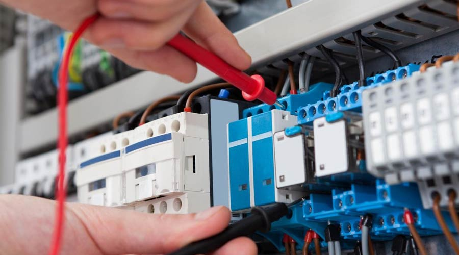
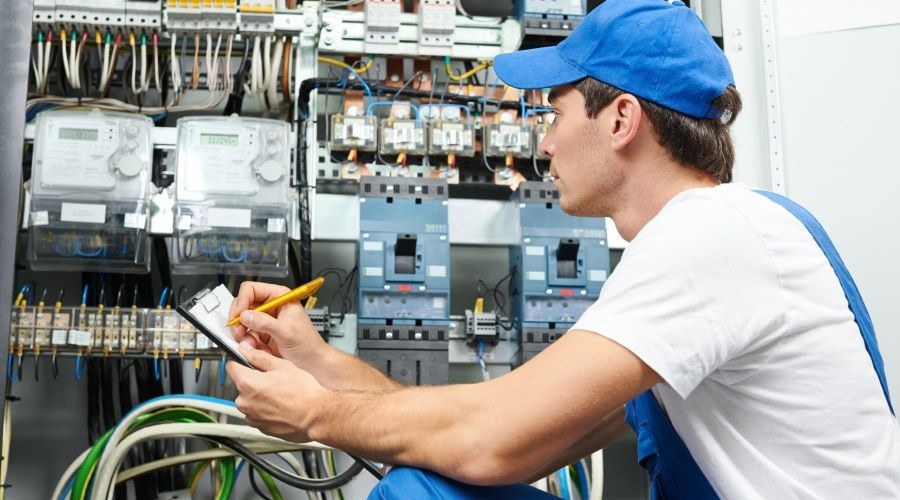
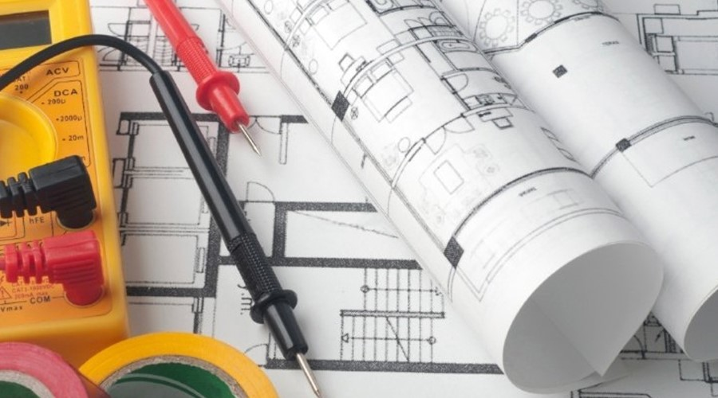

Empresa
A Tecno Daher Soluções Elétricas é uma empresa que tem como base a segurança de tudo que envolve uma manutenção, além da qualidade e atendimento personalizado.
Estamos na cidade de Osasco desde 2007 com uma estrutura ampla para serviços de retrofitting, montagem de painéis e outros.
Experiência
Fundada em 2007, temos mais de 15 anos de experiência em manutenções preventivas e corretivas de MT e outros segmentos da área elétrica industrial, com profissionais treinados, capacitados para atender sua empresa.
Missão
Atender a clientes exigentes com mão de obra qualificada e qualidade dentro das normas de segurança e proteção.
Tudo isso com o melhor custo x benefício da região.
Manutenção Elétrica

A manutenção elétrica é importante para garantir o correto funcionamento, confiabilidade e segurança de sistemas elétricos. Essa prática abrange uma variedade de serviços, incluindo inspeções, reparos, substituição de componentes desgastados e atualizações de equipamentos para atender às normas.
Instalação Elétrica

A instalação elétrica é o conjunto de componentes e condutores que compõem um sistema elétrico em uma estrutura, seja residencial, comercial ou industrial. Essa rede é projetada e implementada para distribuir eletricidade de maneira segura e eficiente, atendendo às necessidades específicas de energia de um local.
Projeção Elétrica

A projeção elétrica é uma avaliação técnica que detalha e especifica todos os componentes e características de um sistema elétrico em uma construção ou instalação. Ele é desenvolvido por profissionais qualificados, como engenheiros elétricos, e serve como guia para a execução da instalação elétrica.